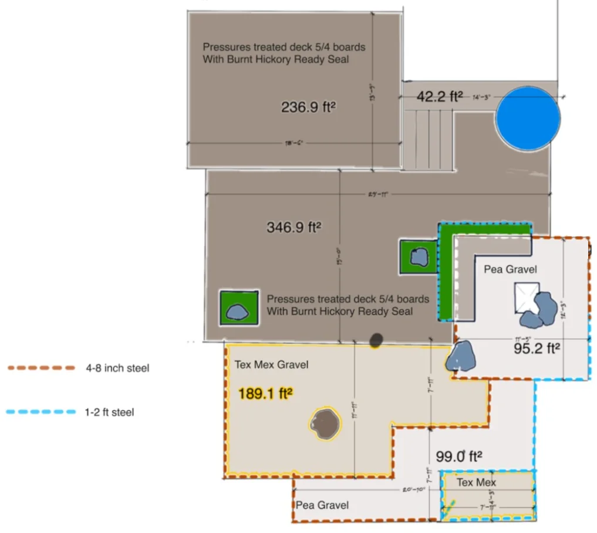

Landscaping in Austin, TX is priced by what gets built, so a yard has no single price: the total is the sum of its parts. Our cost guides put synthetic turf at $7 to $12 per square foot installed, a fence at $15 to $65 per linear foot, yard drainage at $2,000 to $10,000 for most residential projects, landscape lighting at $2,000 to $6,000 for a standard project, most xeriscape projects at $5,000 to $45,000, and a water feature at $1,500 to $35,000 or more. At Red Agave Landscape the consultation is free, the CAD plan is included, and you approve an itemized quote in writing before construction starts.

What Does Each Part of a Landscape Cost in Austin?
The table gives the range each of our cost guides publishes for the Austin area, as of November 26, 2026. Prices by the foot are fully installed. A range is where a budget starts, and the guide behind each row breaks it down by material and size.
| Item | Published range | Cost guide |
|---|---|---|
| Landscape design | Free consultation, and the CAD plan is included with the project | Landscape design cost |
| Xeriscaping | $5,000 to $45,000 for most projects | Xeriscaping cost |
| Synthetic turf | $7 to $12 per square foot | Synthetic turf cost |
| Fence | $15 to $65 per linear foot | Fence cost |
| Deck | Cedar $30 to $50 per square foot, IPE hardwood $55 to $80 per square foot | Deck cost |
| Yard drainage | $2,000 to $10,000 for most residential projects | Drainage cost |
| Landscape lighting | $2,000 to $6,000 for a standard residential project | Landscape lighting cost |
| Water feature | $1,500 to $35,000 or more, by type | Water feature cost |
| Patio | Poured concrete starts at $14 per square foot; stone and pavers are priced in the guide | Patio cost |
| Retaining wall | By the square foot of wall face | Retaining wall cost |
| Outdoor kitchen | By the project, set by size and appliances | Outdoor kitchen cost |
| Pool | By the project, set by the type of pool | Pool cost |
| Sod | By the square foot, set by the grass | Sod installation cost |
| Steel edging | $10 to $28 per linear foot, by height | Steel edging cost |
How Much Does Xeriscaping or Synthetic Turf Cost in Austin?
Xeriscaping is priced by the project. Our xeriscaping cost guide puts most Austin projects between $5,000 and $45,000, in three sizes:
- Under 500 square feet: $5,000 to $12,000. A front yard strip, a side yard, or a courtyard
- 500 to 1,500 square feet: $12,000 to $28,000. A full front yard
- Over 1,500 square feet: $28,000 to $45,000 or more. A whole yard
Synthetic turf is priced by the square foot. Our synthetic turf cost guide puts it at $7 to $12 per square foot fully installed. That is $3,500 to $6,000 for 500 square feet, and $7,000 to $12,000 for 1,000. See our xeriscape and turf installation pages.
How Much Does a Fence or a Deck Cost in Austin?
A fence is priced by the linear foot. Our fence cost guide gives $15 to $65 per linear foot fully installed, with chain link at the low end and steel and wrought iron at the top. Gates are priced separately, and the guide budgets $200 to $600 for a walk-through gate.
A deck is priced by the square foot, and the wood sets the rate. Our deck cost guide gives cedar at $30 to $50 per square foot installed and IPE hardwood at $55 to $80. The same guide prices composite decking, railings, and stairs. See our fences and gates and custom decks pages.
How Much Do Drainage, Lighting, and Water Features Cost in Austin?
- Drainage: $2,000 to $10,000 for most residential projects, and $5,000 to $15,000 for a comprehensive system with French drains, catch basins, and regrading. See the drainage cost guide
- Landscape lighting: $2,000 to $6,000 for a standard residential project. A front-yard-only package starts around $1,500, and a full-property design with premium fixtures and smart controls runs $8,000 to $12,000 or more. See the landscape lighting cost guide
- Water features: $1,500 to $8,000 for a standalone fountain, $5,000 to $15,000 for a pondless waterfall, and $15,000 to $35,000 or more for a pond with a waterfall. See the water feature cost guide
The water feature in the photo above is built like a small pool, with a concrete shell, a plaster interior, and a sand pool filter. See how it was built, and our drainage, landscape lighting, and water features pages.
How Are Patios, Walls, Pools, and Outdoor Kitchens Priced?
Each has its own guide, because the price turns on choices made early.
- Patio: priced by the square foot. Poured concrete starts at $14 per square foot, and the guide calls material choice the biggest factor in a patio budget. See the patio cost guide
- Retaining wall: priced by the square foot of wall face, which is height times length. A wall over 4 feet costs more per square foot, because it needs an engineer and a permit. See the retaining wall cost guide
- Outdoor kitchen: priced by the project, from a grill station to a full kitchen. We build ours from IPE, steel, CMU block, tile, and concrete. See the outdoor kitchen cost guide
- Pool: priced by the project. The guide calls excavation the single biggest variable in Austin pool pricing. See the pool cost guide
- Sod and steel edging: sod is priced by the square foot. Steel edging runs $10 to $28 per linear foot installed, by the height of the steel. See the sod installation cost guide and the steel edging cost guide
What Moves a Landscaping Price in Austin?
The ground and the City’s rules, more than the size of the yard. Our guides give six reasons.
- Rock and soil: the west side of Austin sits on shallow limestone or caliche, and the central and east side on deep, dark clay. Our fence guide adds $500 to $2,000 to a project where posts are set in rocky ground. Our drainage and water feature guides add $500 to $3,000 where limestone has to be cut
- Slope: a sloped fence line adds 10 to 25 percent. An elevated deck costs 30 to 50 percent more than one at ground level. Synthetic turf on a slope adds 50 to 60 percent
- Access: equipment needs a clear path to the backyard, at least 36 inches wide for a wheelbarrow and 6 to 8 feet for a mini excavator. Where a machine cannot get in, the digging is done by hand, and that costs more
- Trees: inside Austin city limits, the City Arborist program protects trees with a diameter of 19 inches or more, so the layout works around them. A fence line routed around a protected root zone takes more material and labor
- Permits: the City of Austin’s list of work exempt from building permits stops at fences 7 feet high, retaining walls 4 feet tall measured from the bottom of the footing, and detached decks of 200 square feet that sit no more than 30 inches above grade. Work past those limits needs a permit, and a wall over 4 feet needs an engineer
- Material: in our deck guide, the most expensive decking costs roughly three times the least expensive
What Does Red Agave Charge for a Plan and a Quote?
Nothing for the consultation, and the CAD plan is included with the project. The steps:
- Free consultation: we walk the yard with you, take measurements, and study sun, shade, drainage, soil, and existing trees
- CAD plan, included: the owner of Red Agave draws every plan. Design development takes 2 to 4 weeks, depending on scope
- Itemized written quote: you approve the materials, the plants, and every detail in writing, with an itemized quote, before construction starts
- Built by our own crew: the company that draws the plan builds it


Red Agave Landscape has designed and built yards in Austin since 2009, and holds 4.8 stars across 87 Google reviews. See our landscape design page, our design plans, and our process. For a number for your own yard, request a free consultation.
Landscaping Cost in Austin
How much does landscaping cost in Austin, TX?
The total is the sum of what is built. Our cost guides put synthetic turf at $7 to $12 per square foot installed, a fence at $15 to $65 per linear foot, drainage at $2,000 to $10,000 for most residential projects, and most xeriscape projects at $5,000 to $45,000.
Why do two quotes for the same yard differ?
Most often because they do not cover the same work. Our backyard renovation guide says the gap between the cheapest bid and a mid-range bid is almost always in base preparation, material quality, plant sizes, and warranty. An itemized quote lets you compare line by line.
Does Red Agave charge for a landscape design?
There is no separate charge. The consultation is free, and the CAD plan is included with the project.
Can a landscape be built in phases?
Yes, when the whole yard is planned first. Our outdoor living guide puts the patio, drainage, grading, and utility lines in the first phase, then the main feature, then shade and lighting, then the last of the planting.
Do I need a permit for landscaping in Austin?
Not for every job. The City of Austin’s list of exempt work includes fences not over 7 feet high and retaining walls not over 4 feet, measured from the bottom of the footing. A homeowners association can require its own approval first. See our approval guides for Circle C, Steiner Ranch, and Mueller.